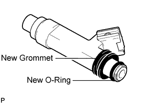
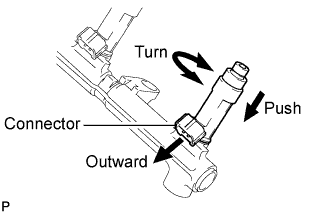
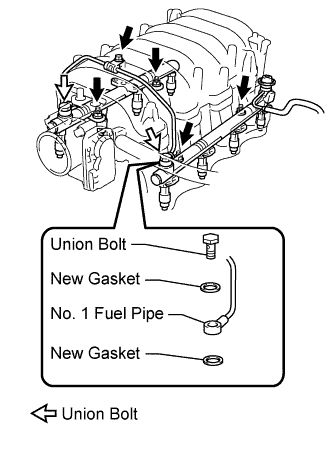
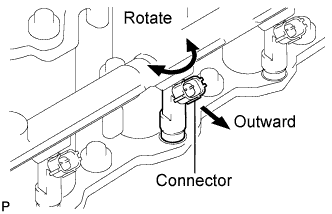

FUEL INJECTOR > INSTALLATION |
| 1. INSTALL FUEL INJECTOR ASSEMBLY |
 |
Install a new grommet to each injector.
Apply a light coat of gasoline to each new O-ring and install one to each injector.
 |
Install the 8 injectors.
While turning each injector clockwise and counterclockwise, push it onto the delivery pipes.
Position the injector connectors outward.
Place 8 new insulators on the intake manifold.
| 2. INSTALL FUEL DELIVERY PIPE SUB-ASSEMBLY |
 |
Place the 2 delivery pipes and injector assemblies on the lower intake manifold.
Temporarily install the 4 nuts.
Install the No. 1 fuel pipe and 4 new gaskets with the bolt and 2 union bolts.
 |
Connect the No. 3 fuel pipe with the 3 bolts.
 |
Connect the fuel return hose to the fuel pressure regulator.
 |
Check that the injectors rotate smoothly.
Position the injector connectors outward.
Tighten the 4 nuts holding the delivery pipes to the lower intake manifold.
| 3. INSTALL VACUUM CONTROL VALVE SET (w/ Secondary Air Injection System) |
 |
Install the vacuum control valve set with the 2 bolts.
Connect the 3 vacuum hoses.
Connect the 2 VSV connectors.
| 4. CONNECT ENGINE WIRE |
 |
Install the engine wire protector with the 2 bolts.
Connect the 8 injector connectors.
 |
Connect the 2 wire clamps to the wire clamp brackets on the delivery pipe.
 |
Connect the engine wire to the wire bracket and engine hanger.
Connect the VSV connector (for ACIS).
| 5. INSTALL PURGE VSV |
 |
Install the purge VSV to the intake manifold with the bolt.
Connect the purge line hose.
Connect the purge VSV connector.
| 6. INSTALL NO. 1 VENTILATION HOSE |
 |
Install the No. 1 ventilation hose to the intake manifold and ventilation valve.
| 7. INSTALL NO. 2 VENTILATION HOSE |
 |
w/ Secondary Air Injection System:
Install the vacuum transmitting hose to the fuel pressure regulator.
Install the clamp.
Install the No. 2 ventilation hose to the cylinder head cover.
 |
w/o Secondary Air Injection System:
Install the vacuum transmitting hose to the fuel pressure regulator.
Install the No. 2 ventilation hose to the cylinder head cover.
| 8. INSTALL NO. 2 FUEL HOSE |
for engine side:
 |
Connect the fuel hose to the No. 3 fuel pipe.
Attach the lock claws to the connector by pushing down on the cover, as shown in the illustration.
Attach the fuel hose clamp.
for body side:
 |
Connect the fuel hose to the fuel pipe.
| 9. CONNECT FUEL HOSE |
 |
Connect the fuel hose.
Install the fuel hose clamp.
| 10. INSTALL NO. 2 WATER BY-PASS PIPE SUB-ASSEMBLY |
 |
Install the No. 2 water by-pass pipe with the 2 bolts.
 |
Connect the 4 water hoses.
| 11. INSTALL NO. 2 V-BANK COVER BRACKET |
 |
Install the bracket with the 2 bolts.
| 12. INSTALL AIR CLEANER HOSE ASSEMBLY |
 |
Install the air cleaner hose so that the protrusion of the air cleaner cap aligns with the groove of the hose as shown in the illustration.
Tighten the 2 clamps.
Connect the vacuum transmitting hose.
Connect the No. 2 ventilation hose.
| 13. INSTALL V-BANK COVER SUB-ASSEMBLY |
 |
Attach the 2 V-bank cover hooks to the bracket.
Install the V-bank cover with the 2 nuts.
| 14. CONNECT CABLE TO NEGATIVE BATTERY TERMINAL |
| 15. ADD ENGINE COOLANT |
Add engine coolant.
| Item | Specified Condition | |
| w/o Transmission oil cooler | w/o Rear Heater | 13.4 liters (14.2 US qts, 11.8 Imp. qts) |
| w/ Rear Heater | 16.3 liters (17.2 US qts, 14.3 Imp. qts) | |
| w/ Transmission oil cooler | w/o Rear Heater | 14.1 liters (14.9 US qts, 12.4 Imp. qts) |
| w/ Rear Heater | 16.9 liters (17.9 US qts, 14.9 Imp. qts) | |
 |
Slowly pour coolant into the radiator reservoir until it reaches the F line.
Install the radiator reservoir cap.
Press the inlet and outlet radiator hoses several times by hand, and then check the coolant level. If the coolant level is low, add coolant.
Install the radiator cap.
Start the engine and warm it up until the thermostat opens.
Maintain the engine speed at 2000 to 2500 rpm.
Press the inlet and outlet radiator hoses several times by hand to bleed air.
Stop the engine, and wait until the engine coolant cools down to the ambient temperature.
 |
Check that the coolant level is between the F and L lines. If the coolant level is below the L line, repeat all of the procedures above. If the coolant level is above the F line, drain coolant so that the coolant level is between the F and L lines.
| 16. INSPECT FOR COOLANT LEAKS |
 |
Fill the radiator with coolant and attach a radiator cap tester.
Warm up the engine.
Using the radiator cap tester, increase the pressure inside the radiator to 123 kPa (1.3 kgf/cm2, 18 psi), and check that the pressure does not drop.
If the pressure drops, check the hoses, radiator and water pump for leaks. If no external leaks are found, check the heater core, cylinder block and head.
| 17. INSPECT FOR FUEL LEAK |
Connect the intelligent tester to the DLC3.
Turn the engine switch on (IG) and intelligent tester ON.
Enter the following menus: Powertrain / Engine and ECT / Active Test / Activate the Fuel Pump Speed Control.
Check that there are no fuel leaks after doing maintenance anywhere on the fuel system.
| 18. INSTALL NO. 1 ENGINE UNDER COVER SUB-ASSEMBLY |
 |
Install the No. 1 engine under cover with the 10 bolts.
| 19. INSTALL FRONT FENDER SPLASH SHIELD SUB-ASSEMBLY LH |
 |
Push in the clip indicated by the arrow in the illustration to install the fender splash shield.
Install the 3 bolts and screw.
| 20. INSTALL FRONT FENDER SPLASH SHIELD SUB-ASSEMBLY RH |